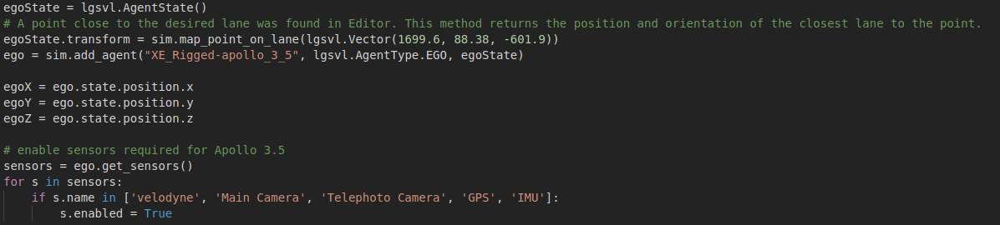

How To Run a Scenario or Test Case
The following steps detail how to run the Traffic Jam scenario. This scenario and other example scenarios can be found on our examples page.
- Install Simulator Python API by navigating to the Api submodule directory under the simulator repository:
pip3 install --user . -
Start the simulator, but leave it on the main page. The Python script will load the map and correct vehicle.
-
Set environment variables SIMULATOR_HOST and BRIDGE_HOST
- SIMULATOR_HOST is where the simulator will be run. The default value for this is "localhost" and does not need to be set if the simulator is running on the same machine that the python script will be run from.
- BRIDGE_HOST is where the AD stack will be run. This is relative to where the simulator is run. The default value is "localhost" which is the same machine as the simulator.
- For example, if computer A will run the simulator and computer B will run the AD stack
- SIMULATOR_HOST should be set to the IP of computer A
- BRIDGE_HOST should be set to the IP of computer B
- To set the variables for the current terminal window use
export SIMULATOR_HOST=192.168.1.100
-
Start your AD stack. The example scripts are written for Apollo 3.5. See below for how to edit the scripts to work with other AD stacks.
- Start all modules and the bridge (if relevant)
- Run the python script from a terminal. The simulator will wait for the bridge to connect and then run for 1 second allowing the AD stack to localize.
- This script spawns several NPCs that make up the traffic jam. The NPC type that is created can be specified if desired.
- If random NPC types is acceptable, then no additional command line argument is necessary.
./scenario-trafficjam.py - If all NPCs should be the same type, 1 command line argument should be given specifying the type.
./scenario-trafficjam.py SchoolBus - If each NPC needs to be specified, 6 command line arguments are required specifying each NPC.
./scenario-trafficjam.py Sedan SUV Jeep HatchBack SchoolBus DeliveryTruck
- If random NPC types is acceptable, then no additional command line argument is necessary.
- Set the destination for the AD stack. For this scenario, the destination is the end of the current lane.

- In the terminal running the python script, press enter to resume the simulation.
- The AV should start driving forward towards the stopped NPCs. It should avoid crashing into the NPC.
How to Edit the EGO vehicle
In each of the example scenarios and test cases, there is a section that setups up the EGO vehicle: 
{kind=link}
If using a different AD stack, the vehicle type needs to be changed. * Change the agent name (orange string) to what is desired. * e.g. For Autoware it might be "XE_Rigged-autoware"
The enabled sensors can be adjusted as well. * The list of strings controls which sensors send data over the bridge. By default the CANBUS is always enabled. * e.g. Autoware only needs the "velodyne" and "GPS" in order to drive.